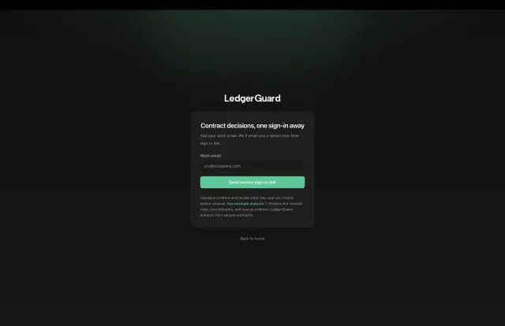

Context
A Next.js App Router application sits in front of a Node.js/Fastify API, Supabase PostgreSQL/Auth/Storage, Redis/BullMQ orchestration, and a Python worker running AWS Textract and OpenAI extraction. Every tenant boundary, job contract, and API surface in that list is one I had to define, because there was nobody else to define them.
- Next.js App Router productServer-rendered product surfaces, with client components only where review interactions need them.
- Node.js/Fastify APIOwns deterministic contract data, API rules, authentication, and tenant scoping.
- Supabase PostgreSQL, Auth, StorageThe tenant-scoped data model, where suggested and confirmed values are stored differently.
- Redis/BullMQ orchestrationExplicit job contracts that let document processing retry or fail independently.
- Python extraction workerAWS Textract and OpenAI extraction, isolated from deterministic contract state.
Probabilistic extraction sits at the bottom of the stack, behind job contracts, so it cannot bypass authentication, tenant boundaries, or review.
Problem
Extraction output is useless if the interface makes it look settled. Someone deciding whether to exercise a notice window needs to know whether a date came out of a model or out of a person confirming it against the document. The workflow had to carry that distinction from the database through to the screen, and stay legible while extraction was still running, partially done, or failed.
Extraction as final data
- Model output lands in the same place as confirmed contract data
- A single loading spinner hides started, partial, and failed extraction
- Users cannot tell whether a date came from a model or a person
- Any distinction lives only in the interface layer
Approach taken LedgerGuard review boundary
- Suggested and confirmed values are stored and rendered differently
- Values cross the boundary only through explicit review
- Source context stays attached to review decisions
- Partial, failed, and review-required are first-class product states
- The boundary holds across the schema, the API, and the UI
A notice-window decision depends on knowing whether a date was extracted or confirmed, so that distinction has to survive every layer.
My role
- Product direction, architecture, implementation, testing, infrastructure, and release, across the whole stack.
- Built the Next.js App Router product, the Fastify API, the PostgreSQL data model, authentication and tenant scoping, background-job orchestration, and the Python worker integration.
- Set the rule the rest of the product follows: suggested values and confirmed values are stored differently, rendered differently, and only cross the boundary through explicit review.
What I built
- Document ingestion and upload flows wired to async extraction state.
- Tenant-aware dashboard navigation and the review surfaces for contract data.
- A verification UI that keeps suggested values visually and structurally apart from confirmed ones, with source context attached.
- Renewal and portfolio views that stay honest about which records are still incomplete.
- API contracts, authentication, billing, job orchestration, Docker setup, and the CI/CD pipeline.
Technical decisions
Decision 1 Keep deterministic contract data and API rules in Node.js/Fastify while isolating probabilistic extraction in the Python worker behind explicit job contracts.
- Why The product needed retryable document processing without allowing AI output to bypass authentication, tenant boundaries, or user confirmation.
- Trade-off The separation adds Redis/BullMQ orchestration, worker lifecycle handling, and more API contracts to maintain.
- Result Background extraction can fail or retry independently while deterministic contract state remains controlled by the application and user review.
Decision 2 Draw a hard line in the App Router between server-rendered product surfaces and the client components that handle review interactions.
- Why Review is the only genuinely interactive part of the product. Everything else is composition and data fetching, and treating it that way keeps the client bundle and the state surface small.
- Trade-off It takes more up-front structure than pushing the whole dashboard into one client-heavy tree, and every new feature has to be placed on one side of the line deliberately.
- Result Route, data, and interaction concerns stayed separable as the workflow grew past the original two screens.
Decision 3 Model extraction as an async workflow with visible intermediate states instead of hiding processing behind a single loading spinner.
- Why Document review depends on whether extraction has started, partially completed, failed, or produced values that still need review.
- Trade-off More UI states mean more implementation and copy work across the review flow.
- Result Users can tell whether the product is waiting, recovering, or ready for confirmation instead of guessing from a generic pending state.
UX and detail decisions
- Used language that distinguishes AI-suggested values from confirmed user-reviewed data throughout the workflow.
- Kept source context visible where available so review decisions stay tied to the contract rather than to a generic summary.
- Treated incomplete extraction and review-required states as first-class product states rather than edge-case modals.
Interface evidence





Outcome
- Shipped a working end-to-end product: ingestion, extraction review, and contract visibility, live at ledgerguard.io.
- Reached 90% unit-test coverage on the web application. Source pending
- Held the boundary between suggested and confirmed contract data across the schema, the API, and the UI rather than only in the interface layer.
What I would improve
- Add more product-level evidence around exception handling so reviewers can prioritize the highest-risk contracts faster.
- Continue refining summary views so incomplete extraction states are easier to scan across larger contract sets.